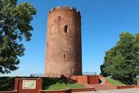

The first our observ object is the National park "Bialowieza Forest". If you don't know, villagers of those foresets are bisons. In 1802, Aleksandr the first forbid the hunting on this type of animals. At the time of the First World War almost all bisons were killed and after those consequenses this type of animals was brought from the Poland. Also, rare kind of deers were brought in this National park from Germany. There you can find another kinds of rare animals, which were included in the Red book of the Republic of Belarus.
